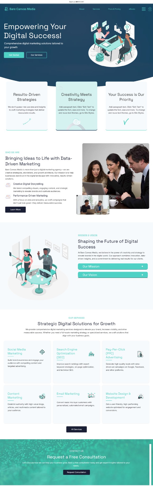

The challenge

← Back to Work
Agency website
Bare Canvas Media
An agency website can look impressive and still make the offer hard to understand. This project was about keeping the visual personality without sacrificing clarity.
Platform usedWix Studio
Project typeAgency website
The story behind the build
The creative identity needed room to breathe without making the offer harder to understand.
Bare Canvas Media needed a stronger visual personality, but an agency website can become impressive-looking very quickly while the actual offer disappears underneath the design.
I used Wix Studio to separate the main offer from supporting services and build a clearer hierarchy underneath the visual system. That gave the brand permission to feel expressive because the structure was doing the hard work of keeping the experience understandable.
The result is an agency website that can feel distinctive without asking the visitor to work out what the business does or where to go next.
What I changed
- Use design to reinforce hierarchy instead of compete with it.
- Separate the primary offer from supporting services.
- Keep important actions obvious across the layout.
- Build responsive behavior intentionally rather than simply shrinking desktop sections.
Where it ended